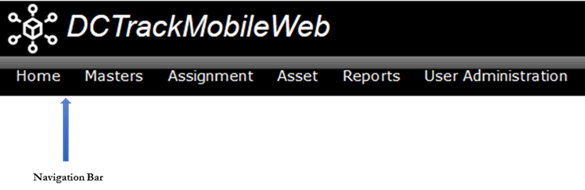
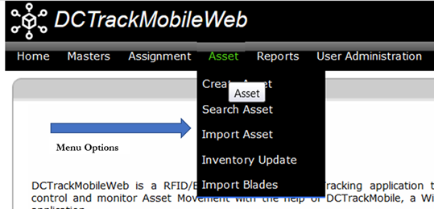

Below the browser menu and toolbar is the Navigation Bar, the top section of the DCTrackMobileWeb application page. The following figure illustrates the Navigation Bar:

DCTrackMobileWeb uses the Navigation Bar to identify the current application, display messages, and display links that let the user maneuver among DCTrackMobileWeb modules.
To access a function,
1. Click the module name from the menu option on the DCTrackMobileWeb navigation bar.
2. Selected menu displays a dropdown list of the available sub menu options for the selected module.
3. Click the submenu option to display the screen for the functionality you would like to perform.

The following menus are available on the menu bar. Visibility of these options depends on the user’s access rights.
|
Copyright © 2019 Hewlett
Packard Enterprise,v5.2.
|